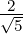
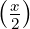
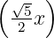

Fibonacci dizisinin bir fonksiyondan nasıl çıkarılabileceğini sormuştu birisi Facebook’ta.  exp  sinh fonksiyonunun n defa x’e göre türevinin x = 0’daki değeri n’inci Fibonacci sayısını verir, deneyebilirsin :)
Wolfram alpha’ya gerekli kodu girdim, sadece en baştaki sayıyı değiştirerek gerçekten de Fibonacci sayısını bu fonksiyon ile elde ettiğini görebilirsiniz: https://wolfr.am/CcIi7hok